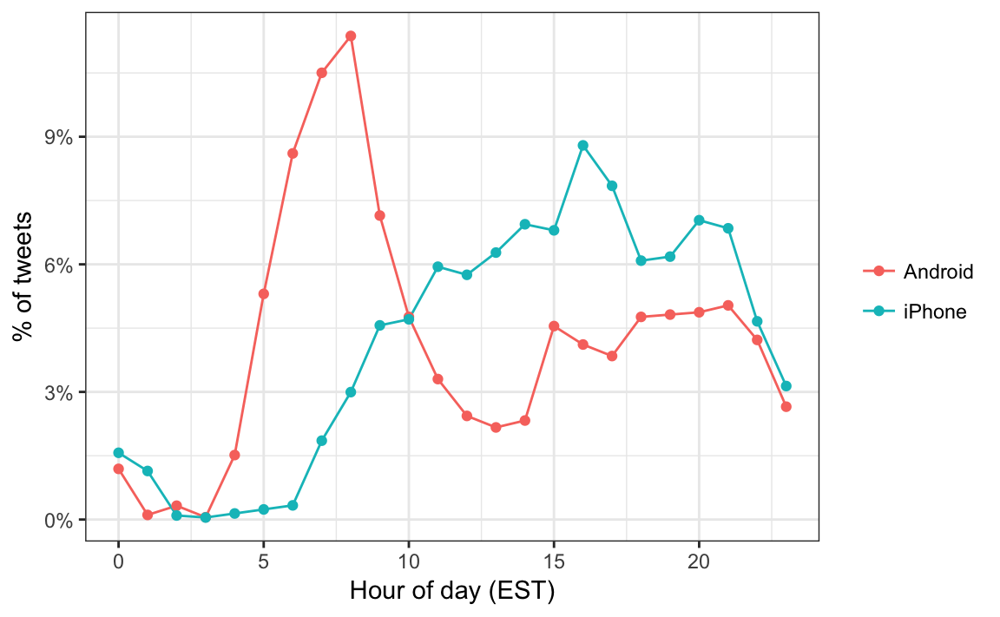
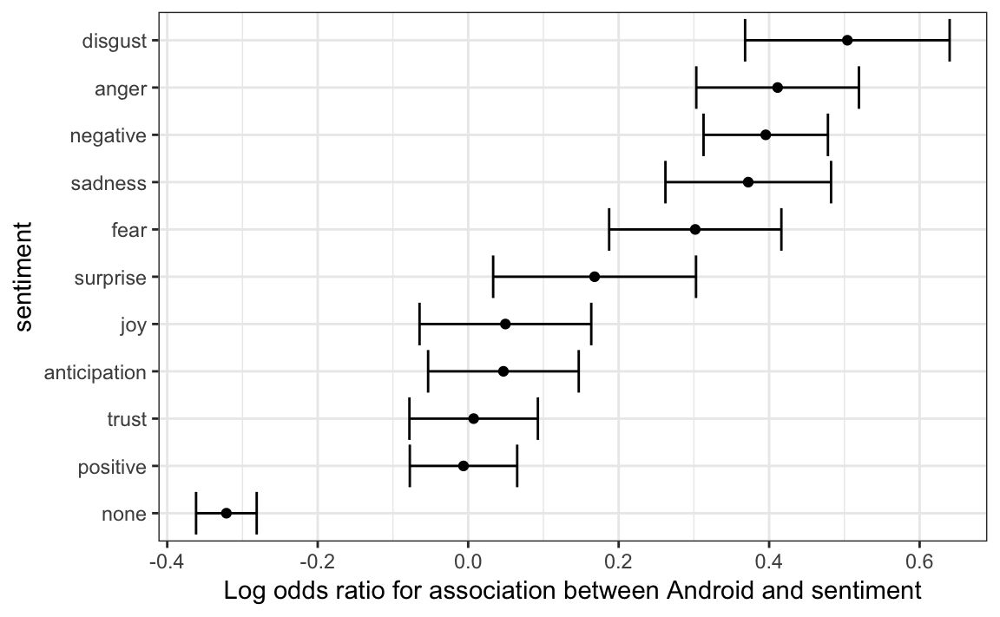
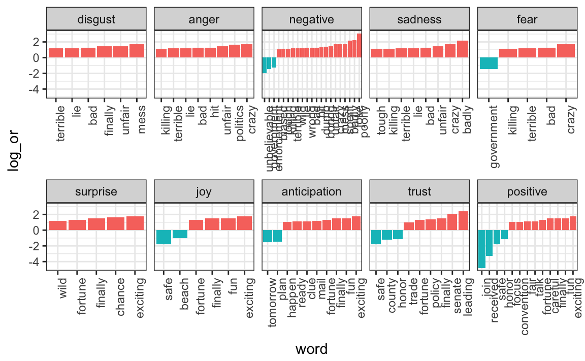

Chapter 27 Text mining
With the exception of labels used to represent categorical data, we have focused on numerical data. But in many applications, data starts as text. Well-known examples are spam filtering, cyber-crime prevention, counter-terrorism and sentiment analysis. In all these cases, the raw data is composed of free form text. Our task is to extract insights from these data. In this section, we learn how to generate useful numerical summaries from text data to which we can apply some of the powerful data visualization and analysis techniques we have learned.
27.1 Case study: Trump tweets
During the 2016 US presidential election, then candidate Donald J. Trump used his twitter account as a way to communicate with potential voters. On August 6, 2016, Todd Vaziri tweeted94 about Trump that “Every non-hyperbolic tweet is from iPhone (his staff). Every hyperbolic tweet is from Android (from him).” Data scientist David Robinson conducted an analysis95 to determine if data supported this assertion. Here, we go through David’s analysis to learn some of the basics of text mining. To learn more about text mining in R, we recommend the Text Mining with R book96 by Julia Silge and David Robinson.
We will use the following libraries:
library(tidyverse)
library(lubridate)
library(scales)In general, we can extract data directly from Twitter using the rtweet package. However, in this case, a group has already compiled data for us and made it available at http://www.trumptwitterarchive.com. We can get the data from their JSON API using a script like this:
url <- 'http://www.trumptwitterarchive.com/data/realdonaldtrump/%s.json'
trump_tweets <- map(2009:2017, ~sprintf(url, .x)) %>%
map_df(jsonlite::fromJSON, simplifyDataFrame = TRUE) %>%
filter(!is_retweet & !str_detect(text, '^"')) %>%
mutate(created_at = parse_date_time(created_at,
orders = "a b! d! H!:M!:S! z!* Y!",
tz="EST")) For convenience, we include the result of the code above in the dslabs package:
library(dslabs)
data("trump_tweets")You can see the data frame with information about the tweets by typing
head(trump_tweets)with the following variables included:
names(trump_tweets)
#> [1] "source" "id_str"
#> [3] "text" "created_at"
#> [5] "retweet_count" "in_reply_to_user_id_str"
#> [7] "favorite_count" "is_retweet"The help file ?trump_tweets provides details on what each variable represents. The tweets are represented by the text variable:
trump_tweets$text[16413] %>% str_wrap(width = options()$width) %>% cat
#> Great to be back in Iowa! #TBT with @JerryJrFalwell joining me in
#> Davenport- this past winter. #MAGA https://t.co/A5IF0QHnicand the source variable tells us which device was used to compose and upload each tweet:
trump_tweets %>% count(source) %>% arrange(desc(n)) %>% head(5)
#> source n
#> 1 Twitter Web Client 10718
#> 2 Twitter for Android 4652
#> 3 Twitter for iPhone 3962
#> 4 TweetDeck 468
#> 5 TwitLonger Beta 288We are interested in what happened during the campaign, so for this analysis we will focus on what was tweeted between the day Trump announced his campaign and election day. We define the following table containing just the tweets from that time period. Note that we use extract to remove the Twitter for part of the source and filter out retweets.
campaign_tweets <- trump_tweets %>%
extract(source, "source", "Twitter for (.*)") %>%
filter(source %in% c("Android", "iPhone") &
created_at >= ymd("2015-06-17") &
created_at < ymd("2016-11-08")) %>%
filter(!is_retweet) %>%
arrange(created_at) %>%
as_tibble()We can now use data visualization to explore the possibility that two different groups were tweeting from these devices. For each tweet, we will extract the hour, East Coast time (EST), it was tweeted and then compute the proportion of tweets tweeted at each hour for each device:
campaign_tweets %>%
mutate(hour = hour(with_tz(created_at, "EST"))) %>%
count(source, hour) %>%
group_by(source) %>%
mutate(percent = n / sum(n)) %>%
ungroup %>%
ggplot(aes(hour, percent, color = source)) +
geom_line() +
geom_point() +
scale_y_continuous(labels = percent_format()) +
labs(x = "Hour of day (EST)", y = "% of tweets", color = "")
We notice a big peak for the Android in the early hours of the morning, between 6 and 8 AM. There seems to be a clear difference in these patterns. We will therefore assume that two different entities are using these two devices.
We will now study how the tweets differ when we compare Android to iPhone. To do this, we introduce the tidytext package.
27.2 Text as data
The tidytext package helps us convert free form text into a tidy table. Having the data in this format greatly facilitates data visualization and the use of statistical techniques.
library(tidytext)The main function needed to achieve this is unnest_tokens. A token refers to a unit that we are considering to be a data point. The most common token will be words, but they can also be single characters, ngrams, sentences, lines, or a pattern defined by a regex. The functions will take a vector of strings and extract the tokens so that each one gets a row in the new table. Here is a simple example:
poem <- c("Roses are red,", "Violets are blue,",
"Sugar is sweet,", "And so are you.")
example <- tibble(line = c(1, 2, 3, 4),
text = poem)
example
#> # A tibble: 4 × 2
#> line text
#> <dbl> <chr>
#> 1 1 Roses are red,
#> 2 2 Violets are blue,
#> 3 3 Sugar is sweet,
#> 4 4 And so are you.
example %>% unnest_tokens(word, text)
#> # A tibble: 13 × 2
#> line word
#> <dbl> <chr>
#> 1 1 roses
#> 2 1 are
#> 3 1 red
#> 4 2 violets
#> 5 2 are
#> # … with 8 more rowsNow let’s look at an example from the tweets. We will look at tweet number 3008 because it will later permit us to illustrate a couple of points:
i <- 3008
campaign_tweets$text[i] %>% str_wrap(width = 65) %>% cat()
#> Great to be back in Iowa! #TBT with @JerryJrFalwell joining me in
#> Davenport- this past winter. #MAGA https://t.co/A5IF0QHnic
campaign_tweets[i,] %>%
unnest_tokens(word, text) %>%
pull(word)
#> [1] "great" "to" "be" "back"
#> [5] "in" "iowa" "tbt" "with"
#> [9] "jerryjrfalwell" "joining" "me" "in"
#> [13] "davenport" "this" "past" "winter"
#> [17] "maga" "https" "t.co" "a5if0qhnic"Note that the function tries to convert tokens into words. To do this, however, it strips characters that are important in the context of twitter. Namely, the function removes all the # and @. A token in the context of Twitter is not the same as in the context of spoken or written English. For this reason, instead of using the default, words, we use the tweets token includes patterns that start with @ and #:
campaign_tweets[i,] %>%
unnest_tokens(word, text, token = "tweets") %>%
pull(word)
#> [1] "great" "to"
#> [3] "be" "back"
#> [5] "in" "iowa"
#> [7] "#tbt" "with"
#> [9] "@jerryjrfalwell" "joining"
#> [11] "me" "in"
#> [13] "davenport" "this"
#> [15] "past" "winter"
#> [17] "#maga" "https://t.co/a5if0qhnic"Another minor adjustment we want to make is to remove the links to pictures:
links <- "https://t.co/[A-Za-z\\d]+|&"
campaign_tweets[i,] %>%
mutate(text = str_replace_all(text, links, "")) %>%
unnest_tokens(word, text, token = "tweets") %>%
pull(word)
#> [1] "great" "to" "be"
#> [4] "back" "in" "iowa"
#> [7] "#tbt" "with" "@jerryjrfalwell"
#> [10] "joining" "me" "in"
#> [13] "davenport" "this" "past"
#> [16] "winter" "#maga"Now we are now ready to extract the words for all our tweets.
tweet_words <- campaign_tweets %>%
mutate(text = str_replace_all(text, links, "")) %>%
unnest_tokens(word, text, token = "tweets")And we can now answer questions such as “what are the most commonly used words?”:
tweet_words %>%
count(word) %>%
arrange(desc(n))
#> # A tibble: 6,620 × 2
#> word n
#> <chr> <int>
#> 1 the 2329
#> 2 to 1410
#> 3 and 1239
#> 4 in 1185
#> 5 i 1143
#> # … with 6,615 more rowsIt is not surprising that these are the top words. The top words are not informative. The tidytext package has a database of these commonly used words, referred to as stop words, in text mining:
stop_words
#> # A tibble: 1,149 × 2
#> word lexicon
#> <chr> <chr>
#> 1 a SMART
#> 2 a's SMART
#> 3 able SMART
#> 4 about SMART
#> 5 above SMART
#> # … with 1,144 more rowsIf we filter out rows representing stop words with filter(!word %in% stop_words$word):
tweet_words <- campaign_tweets %>%
mutate(text = str_replace_all(text, links, "")) %>%
unnest_tokens(word, text, token = "tweets") %>%
filter(!word %in% stop_words$word ) we end up with a much more informative set of top 10 tweeted words:
tweet_words %>%
count(word) %>%
top_n(10, n) %>%
mutate(word = reorder(word, n)) %>%
arrange(desc(n))
#> # A tibble: 10 × 2
#> word n
#> <fct> <int>
#> 1 #trump2016 414
#> 2 hillary 405
#> 3 people 303
#> 4 #makeamericagreatagain 294
#> 5 america 254
#> # … with 5 more rowsSome exploration of the resulting words (not shown here) reveals a couple of unwanted characteristics in our tokens. First, some of our tokens are just numbers (years, for example). We want to remove these and we can find them using the regex ^\d+$. Second, some of our tokens come from a quote and they start with '. We want to remove the ' when it is at the start of a word so we will just str_replace. We add these two lines to the code above to generate our final table:
tweet_words <- campaign_tweets %>%
mutate(text = str_replace_all(text, links, "")) %>%
unnest_tokens(word, text, token = "tweets") %>%
filter(!word %in% stop_words$word &
!str_detect(word, "^\\d+$")) %>%
mutate(word = str_replace(word, "^'", ""))Now that we have all our words in a table, along with information about what device was used to compose the tweet they came from, we can start exploring which words are more common when comparing Android to iPhone.
For each word, we want to know if it is more likely to come from an Android tweet or an iPhone tweet. In Section 16.10 we introduced the odds ratio as a summary statistic useful for quantifying these differences. For each device and a given word, let’s call it y, we compute the odds or the ratio between the proportion of words that are y and not y and compute the ratio of those odds. Here we will have many proportions that are 0, so we use the 0.5 correction described in Section 16.10.
android_iphone_or <- tweet_words %>%
count(word, source) %>%
pivot_wider(names_from = "source", values_from = "n", values_fill = 0) %>%
mutate(or = (Android + 0.5) / (sum(Android) - Android + 0.5) /
( (iPhone + 0.5) / (sum(iPhone) - iPhone + 0.5)))Here are the highest odds ratios for Android
android_iphone_or %>% arrange(desc(or))
#> # A tibble: 5,914 × 4
#> word Android iPhone or
#> <chr> <int> <int> <dbl>
#> 1 poor 13 0 23.1
#> 2 poorly 12 0 21.4
#> 3 turnberry 11 0 19.7
#> 4 @cbsnews 10 0 18.0
#> 5 angry 10 0 18.0
#> # … with 5,909 more rowsand the top for iPhone:
android_iphone_or %>% arrange(or)
#> # A tibble: 5,914 × 4
#> word Android iPhone or
#> <chr> <int> <int> <dbl>
#> 1 #makeamericagreatagain 0 294 0.00142
#> 2 #americafirst 0 71 0.00595
#> 3 #draintheswamp 0 63 0.00670
#> 4 #trump2016 3 411 0.00706
#> 5 #votetrump 0 56 0.00753
#> # … with 5,909 more rowsGiven that several of these words are overall low frequency words, we can impose a filter based on the total frequency like this:
android_iphone_or %>% filter(Android+iPhone > 100) %>%
arrange(desc(or))
#> # A tibble: 30 × 4
#> word Android iPhone or
#> <chr> <int> <int> <dbl>
#> 1 @cnn 90 17 4.44
#> 2 bad 104 26 3.39
#> 3 crooked 156 49 2.72
#> 4 interviewed 76 25 2.57
#> 5 media 76 25 2.57
#> # … with 25 more rows
android_iphone_or %>% filter(Android+iPhone > 100) %>%
arrange(or)
#> # A tibble: 30 × 4
#> word Android iPhone or
#> <chr> <int> <int> <dbl>
#> 1 #makeamericagreatagain 0 294 0.00142
#> 2 #trump2016 3 411 0.00706
#> 3 join 1 157 0.00805
#> 4 tomorrow 24 99 0.209
#> 5 vote 46 67 0.588
#> # … with 25 more rowsWe already see somewhat of a pattern in the types of words that are being tweeted more from one device versus the other. However, we are not interested in specific words but rather in the tone. Vaziri’s assertion is that the Android tweets are more hyperbolic. So how can we check this with data? Hyperbolic is a hard sentiment to extract from words as it relies on interpreting phrases. However, words can be associated to more basic sentiment such as anger, fear, joy, and surprise. In the next section, we demonstrate basic sentiment analysis.
27.3 Sentiment analysis
In sentiment analysis, we assign a word to one or more “sentiments”. Although this approach will miss context-dependent sentiments, such as sarcasm, when performed on large numbers of words, summaries can provide insights.
The first step in sentiment analysis is to assign a sentiment to each word. As we demonstrate, the tidytext package includes several maps or lexicons. We will also be using the textdata package.
library(tidytext)
library(textdata)The bing lexicon divides words into positive and negative sentiments. We can see this using the tidytext function get_sentiments:
get_sentiments("bing")The AFINN lexicon assigns a score between -5 and 5, with -5 the most negative and 5 the most positive. Note that this lexicon needs to be downloaded the first time you call the function get_sentiment:
get_sentiments("afinn")The loughran and nrc lexicons provide several different sentiments. Note that these also have to be downloaded the first time you use them.
get_sentiments("loughran") %>% count(sentiment)
#> # A tibble: 6 × 2
#> sentiment n
#> <chr> <int>
#> 1 constraining 184
#> 2 litigious 904
#> 3 negative 2355
#> 4 positive 354
#> 5 superfluous 56
#> # … with 1 more rowget_sentiments("nrc") %>% count(sentiment)
#> # A tibble: 10 × 2
#> sentiment n
#> <chr> <int>
#> 1 anger 1247
#> 2 anticipation 839
#> 3 disgust 1058
#> 4 fear 1476
#> 5 joy 689
#> # … with 5 more rowsFor our analysis, we are interested in exploring the different sentiments of each tweet so we will use the nrc lexicon:
nrc <- get_sentiments("nrc") %>%
select(word, sentiment)We can combine the words and sentiments using inner_join, which will only keep words associated with a sentiment. Here are 10 random words extracted from the tweets:
tweet_words %>% inner_join(nrc, by = "word") %>%
select(source, word, sentiment) %>%
sample_n(5)
#> # A tibble: 5 × 3
#> source word sentiment
#> <chr> <chr> <chr>
#> 1 iPhone failing fear
#> 2 Android proud trust
#> 3 Android time anticipation
#> 4 iPhone horrible disgust
#> 5 Android failing angerNow we are ready to perform a quantitative analysis comparing Android and iPhone by comparing the sentiments of the tweets posted from each device. Here we could perform a tweet-by-tweet analysis, assigning a sentiment to each tweet. However, this will be challenging since each tweet will have several sentiments attached to it, one for each word appearing in the lexicon. For illustrative purposes, we will perform a much simpler analysis: we will count and compare the frequencies of each sentiment appearing in each device.
sentiment_counts <- tweet_words %>%
left_join(nrc, by = "word") %>%
count(source, sentiment) %>%
pivot_wider(names_from = "source", values_from = "n") %>%
mutate(sentiment = replace_na(sentiment, replace = "none"))
sentiment_counts
#> # A tibble: 11 × 3
#> sentiment Android iPhone
#> <chr> <int> <int>
#> 1 anger 958 528
#> 2 anticipation 910 715
#> 3 disgust 638 322
#> 4 fear 795 486
#> 5 joy 688 535
#> # … with 6 more rowsFor each sentiment, we can compute the odds of being in the device: proportion of words with sentiment versus proportion of words without, and then compute the odds ratio comparing the two devices.
sentiment_counts %>%
mutate(Android = Android / (sum(Android) - Android) ,
iPhone = iPhone / (sum(iPhone) - iPhone),
or = Android/iPhone) %>%
arrange(desc(or))
#> # A tibble: 11 × 4
#> sentiment Android iPhone or
#> <chr> <dbl> <dbl> <dbl>
#> 1 disgust 0.0299 0.0186 1.61
#> 2 anger 0.0456 0.0309 1.47
#> 3 negative 0.0807 0.0556 1.45
#> 4 sadness 0.0424 0.0301 1.41
#> 5 fear 0.0375 0.0284 1.32
#> # … with 6 more rowsSo we do see some differences and the order is interesting: the largest three sentiments are disgust, anger, and negative! But are these differences just due to chance? How does this compare if we are just assigning sentiments at random? To answer this question we can compute, for each sentiment, an odds ratio and a confidence interval, as defined in Section 16.10. We will add the two values we need to form a two-by-two table and the odds ratio:
library(broom)
log_or <- sentiment_counts %>%
mutate(log_or = log((Android / (sum(Android) - Android)) /
(iPhone / (sum(iPhone) - iPhone))),
se = sqrt(1/Android + 1/(sum(Android) - Android) +
1/iPhone + 1/(sum(iPhone) - iPhone)),
conf.low = log_or - qnorm(0.975)*se,
conf.high = log_or + qnorm(0.975)*se) %>%
arrange(desc(log_or))
log_or
#> # A tibble: 11 × 7
#> sentiment Android iPhone log_or se conf.low conf.high
#> <chr> <int> <int> <dbl> <dbl> <dbl> <dbl>
#> 1 disgust 638 322 0.474 0.0691 0.338 0.609
#> 2 anger 958 528 0.389 0.0552 0.281 0.497
#> 3 negative 1641 929 0.371 0.0424 0.288 0.454
#> 4 sadness 894 515 0.342 0.0563 0.232 0.452
#> 5 fear 795 486 0.280 0.0585 0.165 0.394
#> # … with 6 more rowsA graphical visualization shows some sentiments that are clearly overrepresented:
log_or %>%
mutate(sentiment = reorder(sentiment, log_or)) %>%
ggplot(aes(x = sentiment, ymin = conf.low, ymax = conf.high)) +
geom_errorbar() +
geom_point(aes(sentiment, log_or)) +
ylab("Log odds ratio for association between Android and sentiment") +
coord_flip() 
We see that the disgust, anger, negative, sadness, and fear sentiments are associated with the Android in a way that is hard to explain by chance alone. Words not associated to a sentiment were strongly associated with the iPhone source, which is in agreement with the original claim about hyperbolic tweets.
If we are interested in exploring which specific words are driving these differences, we can refer back to our android_iphone_or object:
android_iphone_or %>% inner_join(nrc) %>%
filter(sentiment == "disgust" & Android + iPhone > 10) %>%
arrange(desc(or))
#> Joining, by = "word"
#> # A tibble: 20 × 5
#> word Android iPhone or sentiment
#> <chr> <int> <int> <dbl> <chr>
#> 1 mess 13 2 4.62 disgust
#> 2 finally 12 2 4.28 disgust
#> 3 unfair 12 2 4.28 disgust
#> 4 bad 104 26 3.39 disgust
#> 5 terrible 31 8 3.17 disgust
#> # … with 15 more rowsand we can make a graph:
android_iphone_or %>% inner_join(nrc, by = "word") %>%
mutate(sentiment = factor(sentiment, levels = log_or$sentiment)) %>%
mutate(log_or = log(or)) %>%
filter(Android + iPhone > 10 & abs(log_or)>1) %>%
mutate(word = reorder(word, log_or)) %>%
ggplot(aes(word, log_or, fill = log_or < 0)) +
facet_wrap(~sentiment, scales = "free_x", nrow = 2) +
geom_bar(stat="identity", show.legend = FALSE) +
theme(axis.text.x = element_text(angle = 90, hjust = 1)) 
This is just a simple example of the many analyses one can perform with tidytext. To learn more, we again recommend the Tidy Text Mining book97.
27.4 Exercises
Project Gutenberg is a digital archive of public domain books. The R package gutenbergr facilitates the importation of these texts into R.
You can install and load by typing:
install.packages("gutenbergr")
library(gutenbergr)You can see the books that are available like this:
gutenberg_metadata1. Use str_detect to find the ID of the novel Pride and Prejudice.
2. We notice that there are several versions. The gutenberg_works() function filters this table to remove replicates and include only English language works. Read the help file and use this function to find the ID for Pride and Prejudice.
3. Use the gutenberg_download function to download the text for Pride and Prejudice. Save it to an object called book.
4. Use the tidytext package to create a tidy table with all the words in the text. Save the table in an object called words
5. We will later make a plot of sentiment versus location in the book. For this, it will be useful to add a column with the word number to the table.
6. Remove the stop words and numbers from the words object. Hint: use the anti_join.
7. Now use the AFINN lexicon to assign a sentiment value to each word.
8. Make a plot of sentiment score versus location in the book and add a smoother.
9. Assume there are 300 words per page. Convert the locations to pages and then compute the average sentiment in each page. Plot that average score by page. Add a smoother that appears to go through data.